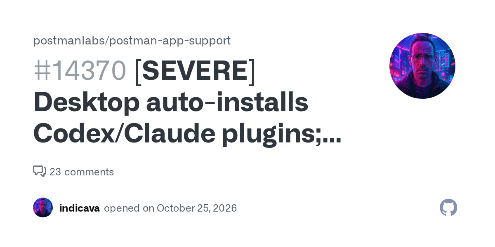
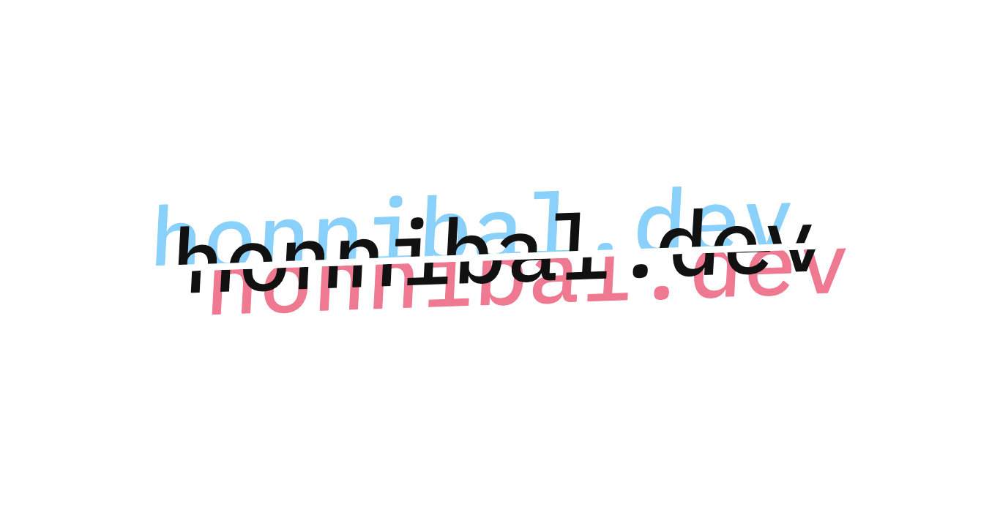
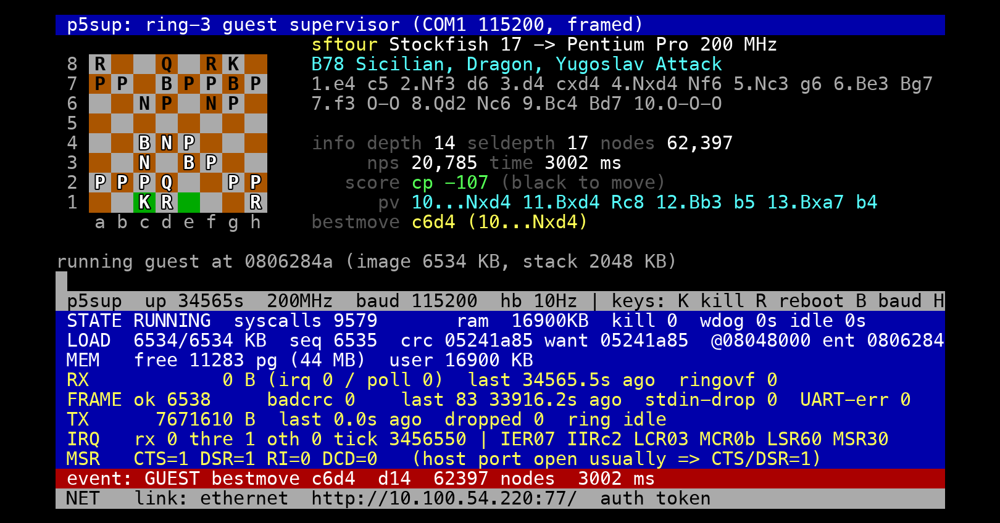
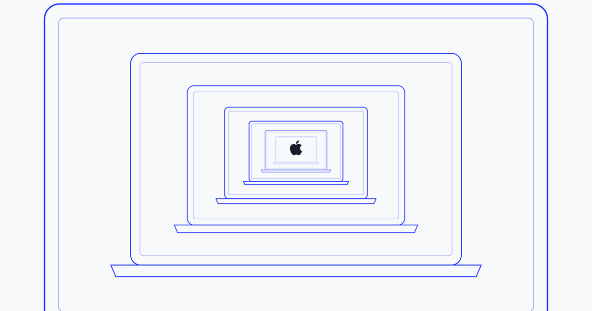

JERUSALEM — A severity report filed on Postman's public tracker, issue #14370 on postmanlabs/postman-app-support, documents an installation nobody asked for: opening the Postman desktop app, version 12.33.4, was followed by a user-wide Postman plugin in Codex, a remote MCP connection to mcp.postman.com, a Claude Code plugin, and a separately installed Postman command-line tool. The reporter's evidence is Postman's own log — main.log, timestamped 2026-10-24T09:34:14Z, 12:34 local — reading "auto-existing-upgrade… claude-code:installed, codex:installed." The installed hook instructs agents that "before responding to any non-trivial API engineering task — designing, implementing, mocking, testing, monitoring, documenting, or deploying an API or Postman Flow — load the postman:api-engineer skill and follow it."[1]
The sharpest finding is in the installer's source: after installing the plugin, it calls a routine that upserts the hook's trusted_hash into Codex's configuration — approving its own startup hook on the user's behalf, rather than leaving that decision to the user in the agent host. The remote MCP connection was enabled despite failing authentication at startup. The report is carefully bounded: it "does not claim to establish data exfiltration," only that an API client made itself the default workflow in unrelated coding tools. The reporter asks Postman to stop automatic agent-plugin installation pending explicit opt-in, remove installer-side self-approval of hooks, and identify the release or feature flag behind "auto-existing-upgrade."[1]
The thread, 60 top-level comments deep at snapshot, is largely an exodus. The most-replied comment counts Postman's $400 million-plus raised and 1,500-plus employees against what "should have been a tiny OSS/passion project," and says the company must now justify its valuation with "forcing logins, collecting data, monthly subscriptions, AI features." Reader after reader reports migrating to Bruno, Insomnia, or plain HTTP files in an editor — though one, noting that skills are just markdown files, asked who needed any of it installed at all.[2]

Matthew Honnibal's rebuttal of the MIT CSAIL weights paper — typeset in this morning's edition at 228 points — closed the afternoon at 827, a 262.7 percent gain that cleared both follow-up bars. The argument stands: the abstract's phrase "just by looking at the raw weights" describes only the small-network experiments on 17,000 to 172,000 weights, while the experiments that improve game-playing networks and Qwen "write Python programs." His framing is a stage magician's — three ways of doing the same trick, so each performance debunks your theory about the last.[3][4]
The rebuttal's own thread pushed back hard. One reader said the original post "explains what they did and why better than this post"; another called Honnibal "equally disingenuous," since raw-weight reading held in three experiments at all; a third pointed out the whole dispute is about what the abstract lets a skimmer assume. A fourth saw bigger stakes: recursive self-improvement talk may mean "LLMs modifying their own weights through tooling directly."[4]
The New York Times reports — its page sat behind a bot wall at press time — that Google will cut off Search for schools that ban AI tools: "If a school has banned A.I., students will not have access to search, and they'll see a message from their school that indicates it's not available," Chris Phillips, Google's vice president for education, told the paper. Google's own announcement, published today, puts the mechanism plainly: "Access to these products will be entirely off for K-12 student accounts until school administrators explicitly turn them on" — with the products listed as Gemini, Gemini Notebook, Gemini in Classroom, and Google Search.[7][8][9]
Search is being bundled because it is gaining the AI feature: Guided Learning, which walks students through problems "without going directly to the answer," piloting in select U.S. schools this month. The thread's 347 comments — the day's most-discussed — split on whether off-by-default bundling is school control or coercion: one reader called it "comically evil" given that disabling AI summaries alone would be trivial; another countered the Times headline was "less clickbaity" than it looked, since administrators opt in; a third hoped the whole affair ends with students learning other search engines.[8][9]
Rasmus Moorats's 2014 Renault Latitude would not adjust its clock without a navigation SD card the previous owner had offered him and he had declined. The unit's maps were outdated anyway, so on blog.nns.ee he documents the long way around: the SD card is locked by DRM keyed to the card's burned-in CID, the root filesystem is read-only, and the unit has no concept of time zones at all — it takes time from GPS and stores the local offset in minutes. His was set to 180. He changed it to 120.[5]
Getting there meant emulating the whole unit in QEMU with a custom 2.6-era kernel and a CAN-bus emulator, then borrowing a trick from kernel exploits: overwriting /proc/sys/kernel/core_pattern — normally the crash-dump setting — with the pipe syntax that executes a program instead, which ran his script from the SD card. The thread supplied the genre's hall of variants: a Honda CR-V in Arizona off by an hour half the year, Canadian head units about to miss next spring's daylight-saving change, a 2001 luxury car that demanded country and zone despite having GPS — and a pointer to grey-market SD cards sold with custom CIDs for exactly this kind of copy protection.[5][6]

Nicholas Carlini, writing November 1, answers the question in his title with a machine on his desk: a 200 MHz Pentium Pro — released 31 years to the day before the article — with 64 MB of RAM, running a custom port of Stockfish tuned for 32-bit arithmetic and a small memory budget. Its estimated classical-time-control rating is 3300 Elo, against Garry Kasparov's just under 2800. Deep Blue, for comparison, used 30 processors and 480 custom chess co-processors to analyze 200 million positions per second and was the 259th most powerful supercomputer in the world.[10]
The experiment's core number: of the roughly 1,335 Elo that separate 1996's best commodity engines from modern Stockfish, Carlini attributes +720 to better programming, not better hardware — and in a 100-game match, the modern engine on the 1996 Pentium Pro beat 1996's Crafty running on a modern Ryzen, 78 wins to 5 with 17 draws. The thread did the checking: one reader noted much of that "programming" — NNUE evaluation, distributed Fishtest tuning — is itself a product of modern hardware; another disputed the article's aside about grandmasters examining as few branches as amateurs.[10][11]
KalshiEX, LLC, co-founder and chief executive Tarek Mansour, and co-founder and chief operating officer Luana Lopes Lara each face 13 felony charges and one misdemeanor for violating Utah's gambling laws, based on sports bets offered September 13–24; the pair were issued summonses rather than arrest warrants, for Third District Court in Salt Lake County. Kalshi's response: "This is a crazy overreach; Utah is clearly playing politics. We look forward to putting a stop to this in court, just like we did in Arizona" — where the company beat similar charges in May.[12]
The same week, the Commodity Futures Trading Commission sued Utah — the tenth state it has taken to court — claiming federal law preempts state gambling regulation of its registered contract markets. Utah already beat Kalshi once: in August, Judge Robert Shelby ruled the federal law Kalshi cited "does not preempt Utah's ability to enforce its anti-gambling laws." With the Third Circuit siding with the markets and the Sixth and Ninth against them, New Jersey has petitioned the Supreme Court, backed by 39 other states. The thread's most-upvoted readings: prediction markets on sports "strains credulity" as anything but betting, and nobody should face prison over a jurisdictional dispute.[12][13]
Simon Willison ran one of the weights paper's no-tools experiments against a model anyone can run: Qwen 3.8 27B, a 17 GB download, loaded in LM Studio on his own laptop. Fed the paper's published Pac-Man prompt — raw floating-point weights and the instruction "You have no tools: no code execution, no calculator, nothing to run" — the local model worked for 46 minutes 12 seconds and 43,506 reasoning tokens, then answered: "A simplified Pac-Man-style gridworld: an agent moves through a fixed 8x8 maze with central and corner wall blocks, moving objects/ghosts, and reward targets/pellets." Kimi K3.1 Pro, on the same task family, needed 9 minutes 41 seconds for Breakout.[14]
Willison frames the result inside the week's dispute: the no-tools question — what models can do with raw weights alone — is separable from the with-code experiments Honnibal rebutted, and it is the one he finds more interesting. His thread drew a replication of its own: one reader fed the same model the weights of a simple upscaler network he wrote years ago and got a correct description of its architecture. The most-shared reply reached for Shakespeare — Glendower's "I can call spirits from the vasty deep," Hotspur's "but will they come when you do call for them?" — and a complaint that a blog post keeps being called a paper.[14][15]
Field Desk · RoboticsStringman, published at neufangled.com, is a room-scale cable robot that hangs its gripper from lines anchored in ceiling corners. In robotics, the page argues, "price is basically actuator count" — four direct-drive motors reach a whole room, working from above floors too cluttered for wheeled or legged robots, and payload scales with the motors' combined torque rather than any single actuator's: up to 2.2 kg near the floor, 1.9 kg on average, in rooms of 3 to 10 meters. It moves at about 0.4 meters per second, has roughly 1,000 hours of testing in real homes, and is open source and OSHWA-certified — the mechanical CAD, PCBs and control software are published. A $795 kit is listed, which the page prices against a comparable serial arm at "roughly 500× the work area volume per dollar."[20]
The thread's consensus was that the idea is cleverer than the first video suggests — one reader reported that the blanket-pickup clip, not the clothes clip, is the convincing one — with the standing worry that lines strung across a living room suit a warehouse better than a household. A few wanted the three-cable version; one expected a funded company to polish the idea and outship the original.[21]
Fujifilm will invest roughly 10 billion yen — about $63 million — at its Kanagawa factory in Odawara to increase production capacity fivefold against fiscal-2025 levels, across fiscal 2026 through 2028, primarily for LTO Ultrium 10 tape. The company attributes the demand to generative AI's "exponential growth" in data, and calls it the largest investment it has made in dedicated LTO facilities. Its tape lineage runs from the 1950s; Ultrium 10, debuted in 2025, was the first generation to use "fine hybrid magnetic particles," combining barium ferrite with strontium ferrite.[16]
Fujifilm's pitch leans on ransomware: tape can be air-gapped — disconnected and stored in a vault — "as a last defense for user data." The thread priced the medium itself (LTO-10 at roughly $8.60–$10 per terabyte, per a reader's reference site), and a tape veteran contributed the operational warning: verify archives by actually restoring from them, since a write-side confirmation is not proof the data comes back. One reader offered an alternate demand driver: harvest-now-decrypt-later attackers need storage too.[16][17]
Practical Tech Corner · Infrastructure
Namespace, which rents Mac hardware by the minute for iOS builds, explains why its new racks hold MacBook Pros: customers cannot build or release iOS apps without a Mac and a current Xcode, and the Mac Mini order it placed in January arrived in July. Each laptop in the rack gets four cables — power, 10-gigabit Ethernet, IP-KVM for the firmware screens that only accept mouse clicks, and video — forty-eight per shelf. The surprises were not the expected ones: MagSafe connectors held fine, while HDMI was the least reliable cable in the rack, and FileVault's unlock prompt expires from an external screen after five minutes — the SSH unlock path expires on laptops too, leaving a physical-button reboot and a race.[18]
The post closes with the workaround that works: fdesetup authrestart reboots a Mac while keeping the disk unlocked. The thread's arithmetic was blunter than the post's: cloud-Mac minutes at $0.06 and up mean a one-hour UI-test suite can cost more than the service it tests; one reader guessed an Xserve at twice a Mini's price would still sell out, and another questioned whether Apple's two-virtual-machines-per-machine rule pays for the hardware it forces onto developers.[18][19]
| Stories typeset | 10 |
| Fresh stories | 9 |
| Follow-ups | 1 |
| Carried in digest | 0 |
| Combined score | 4,645 pts |
| Combined comments | 2,015 |
| Most-discussed thread | Google schools, 347 cmts |
| Top mover since last edition | +599 pts |
| Stories on the page at snapshot | 31 |
ROOM-SIZED ROBOT, four motors, ceiling lines. Lifts 2.2 kg near the floor; CAD, PCBs and control software published. $795; about 1,000 hours tested in real homes.
CLOCK REPAIR, one Renault Latitude, 2014. GPS sets the time; offset stored in minutes; card keyed by CID. Successful applicants will know core_pattern pipe syntax.
MACBOOK PROS, rack-mounted, four cables each. HDMI proves least reliable; FileVault prompts expire in five minutes. Enquire within, Namespace.
Postman's silent installs of itself into coding agents lead the page at 831 points; the weights-paper rebuttal nearly matches it at 827, up 599 since the morning edition; and Google confirmed Search itself goes dark for school accounts that keep AI off.
On "attempts to share all API data." The link's headline phrase goes beyond the report it points at. Issue #14370 states plainly: "This report establishes unwanted integration and instruction changes; it does not claim to establish data exfiltration" — and the MCP connection it installed failed authentication at startup. What is documented is self-approval of hooks and a routing instruction, not data sharing.[1]
On "Google will turn off search for schools that reject AI." The Times headline casts the cutoff as Google's act against objecting schools. Google's announcement describes off-by-default access for all K-12 student accounts across Gemini, Gemini Notebook, Gemini in Classroom and Search, enabled only when administrators opt in — schools that leave AI off do lose Search, but as the default state of a bundle rather than a targeted penalty.[7][9]
On the Pentium's 3300 Elo. The figure is the author's extrapolation: measured at 3180 ± 80 at 30 seconds per move, plus an assumed +70 Elo per tripling of thinking time, "allowing for some diminishing returns." It is also not unmodified modern Stockfish — the port was rewritten for 32-bit arithmetic and 64 MB of memory and tuned for the chip.[10]
On the $800 robot. The thread's title prices Stringman at $800; the product page lists the kit at $795.[20]
Nine fresh stories and one follow-up make today's sheet: Postman's agent installs lead, Honnibal's rebuttal returns nearly quadrupled at 827 points, and the school-search story is reported from its thread and Google's own announcement because the Times would not open its doors to this press. No story needed the digest, and no slot needed padding; all ten were sourced from their primary links and threads.
Methodology — Snapshot of the Hacker News front page taken at 22:00 UTC, November 3, 2026 (16:00 US Central), via the Algolia HN Search API, which listed 31 stories on the page. Candidates were deduplicated against the previous four editions; one story returned as a follow-up after clearing both the +40 percent and +150-point bars (+262.7 percent, +599 points), and no digest was needed. Article text was fetched from primary sources, with two exceptions stated where they occur: the Times article declined automated access and is reported from its thread and the company's own announcement. Images are each page's own published preview art; comments come from the Algolia items API. Points and comment counts are as of the snapshot. The ledger and top bar sum the ten chosen stories exactly: 4,645 points across 2,015 comments.